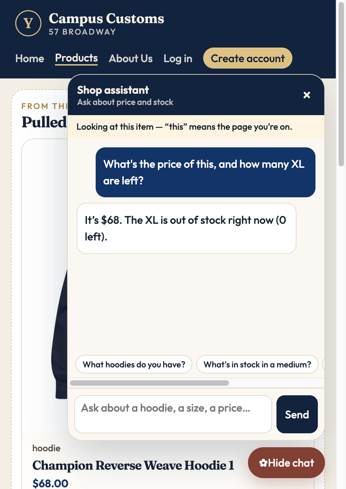
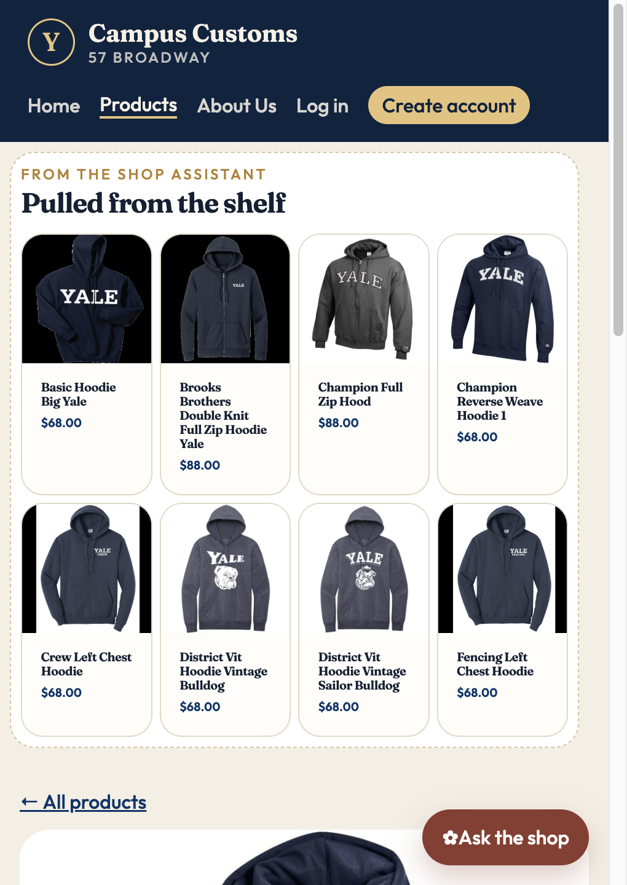
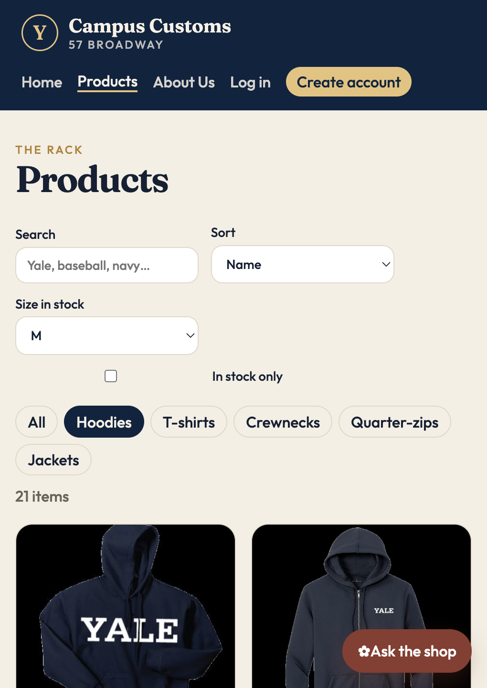

Tested on the running site (Vite at http://127.0.0.1:5173, FastAPI at http://127.0.0.1:8000, model gpt-5.6-sol through Portkey).

On the Champion Reverse Weave Hoodie page I asked “What's the price of this, and how many XL are left?” The assistant answered $68 and said XL is out of stock (0 left). Both match the database: catalogue.price is 68.0 and the XL row in inventory has quantity 0. The yellow “Looking at this item” line shows the page context reached the agent, so “this” was resolved without asking.

After I asked “What hoodies do you have?”, the agent called search_catalogue and returned eight product ids. The site rendered them as cards with image, name, and price in the “Pulled from the shelf” strip under the nav. Clicking the first card opened /products/basic-hoodie-big-yale, the same large-photo detail page used by the Products grid.

I picked the “Hoodies” chip and set “Size in stock” to M. The count dropped from 27 hoodies to 21, because the six hoodies whose medium has quantity 0 in the inventory table (such as the Crew Left Chest Hoodie and Ice Hockey Left Chest Hoodie) were hidden. A shopper sees only hoodies they can actually buy in their size, without opening each product.